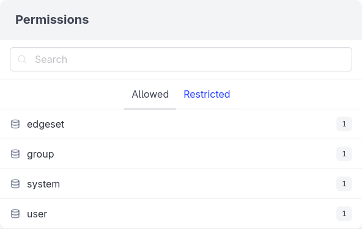
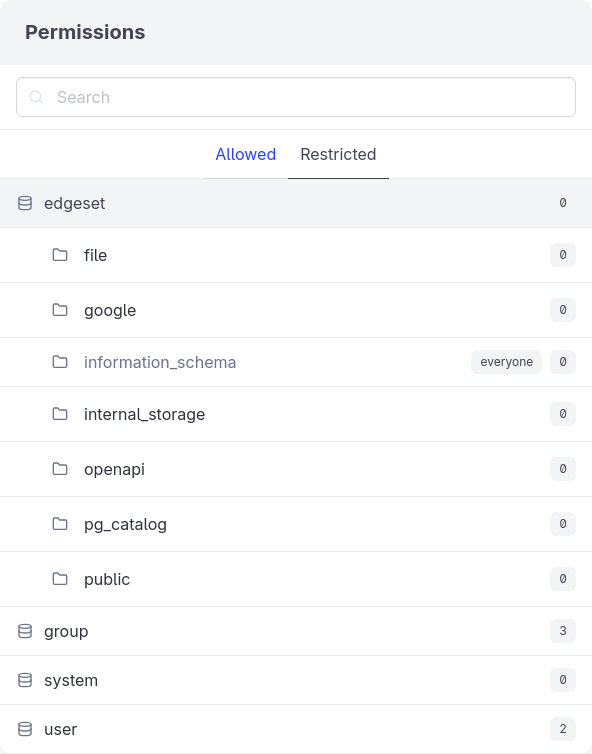
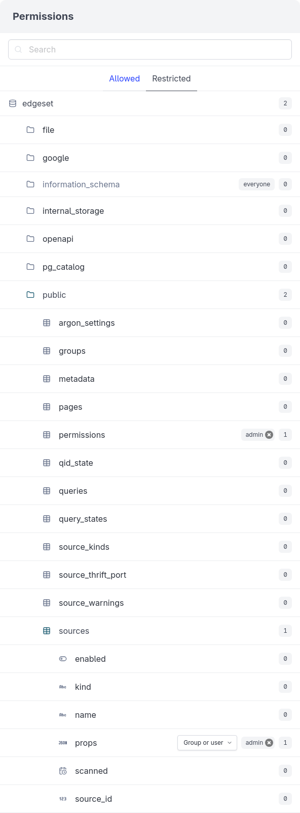

9 Permissions
EdgeSet allows you to control access for each data source down to the column level. The permissions system is designed to make it simple to “democratize” access to data: to grant broad access to everyone in the organization but restrict access to sensitive data to a small set of trusted users. However, you can still use EdgeSet’s permission systems to manage more conservative and restrictive permissions.
To show how the permissions system works, we’ll start by adding Edgeset’s internal PostgreSQL database as a data source.
After adding the edgeset data source and restarting the query engine, you can see the edgeset data source in the permissions panel. As edgeset is a new data source, it does not have any permissions assigned yet. All data sources can always be accessed by admins though.

0 indicating that no permissions have been assigned to them yet9.1 Restricted by default
EdgeSet is designed to protect your sensitive data. EdgeSet doesn’t grant access to new data sources to anyone except admins until you’ve told it to. You can review the data and add all desired schema, table, and/or column-level restrictions before granting access to non-admins.
We will show how to grant access first to make the permissions system easier to understand, but you should apply restrictions before granting access to data sources.
9.2 Granting access
To grant a group or user access to a data source, click on the data source to expand it and then select the group or user from the Group or user dropdown menu.

analysts group has been granted read-only access to the edgeset data sourceBy default, groups and users are granted read-only access to data sources. You can use the dropdown menu to grant all access which allows for making changes to the underlying data source. In this case, we want analysts to have only read-only access to the EdgeSet database. If they had all access, they could write SQL to make changes to EdgeSet that are normally restricted to admins.
9.3 Restricting access
Now click the Restricted tab and click the edgeset data source to expand it and show the restrictions currently applied to it.

edgeset data source has no restrictions for any schemaNote that information_schema and edgeset here are schemas within the edgeset data source. You cannot apply any restrictions to the information_schema. All users with access to a data source will have read-only access to its information_schema (which provides metadata about the data source itself).
Next, click on the edgeset schema to expand the list of tables it contains.
To restrict access to the permissions table, select the group or user you’d like to restrict access to from the dropdown menu.
permissions table has been restricted to adminsBy restricting access to the permissions table to the admin group, users in the analysts group will not be able to view the permissions table, even though they have access to the edgeset data source.
To restrict access to a column, click on a table to expand it and then add the restriction to the column.

props column of the connectors table has been restricted to adminsBy restricting access to the props column, analysts will be able to view the connectors table but not the props column.
You can add multiple groups and/or users to the restricted list. Any users who are not in the list will not have access.
Restrictions apply to any objects contained by the restricted object. For example, restricting access to a schema means that the tables and columns in that schema will be restricted as well. This also means that restrictions applied to a lower level object must be limited to the set of restricted groups and users at a higher level. For example, if you’ve restricted access to the edgeset schema to admin users only, it would not make sense to restrict a table in the edgeset schema to analysts since analysts are already restricted from accessing the schema.